| 日付 | 2013年9月21日（土） - 2013年9月22日（日） | |||||
|---|---|---|---|---|---|---|
| 山域 | 八ヶ岳 | |||||
| メンバー | 家族（妻、長女・2歳、長男・0歳） | |||||
| 山行形態 | 子連れ1泊2日ホテル泊 | |||||
| アクセス | 車 | |||||
| ルート (Map1) |
|
今週末は3連休。天気がそこそこ良さそうだったので、蓼科山に行く計画を立てる。
車で比較的標高の高いところまで行けるので、子連れでも大丈夫そうだ。
日帰りではきついので現地で宿泊し、次の日もう一山登って帰ってくることにする。
1日目
今朝は5時起き、5時半に出発したのだが、3連休のため中央道はずっと混雑。
到着時間が大幅に遅れてしまった。比較的大きな駐車場があるのだが、
路駐スペースも含めて車で一杯。僅かなスペースを見つけて何とか車を停める。
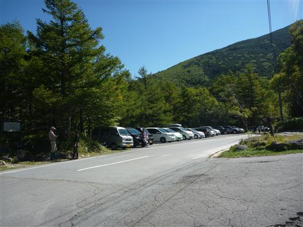
蓼科山の登山道入口に鳥居が立っている。標高1900m。
前回蓼科山に登った時は麦草峠から縦走しているため、こちらの登山道を歩くのは初めてだ。
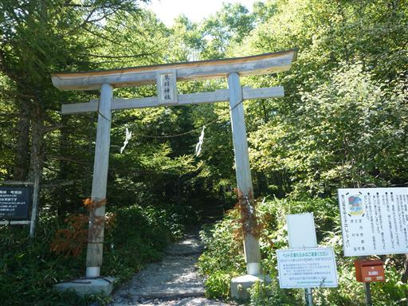
最初の方は緩やかな傾斜の歩きやすい登山道だ。
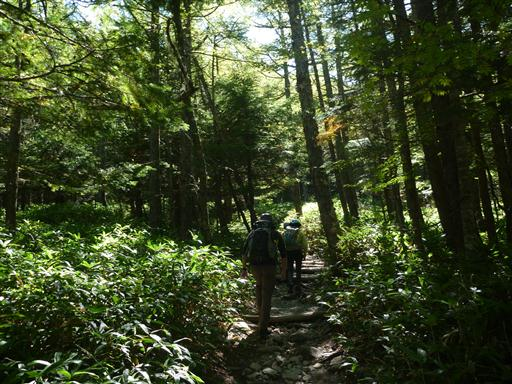
娘は最初キャリアに乗っていたが、歩きやすい登山道のため歩かせてみる。
最初は嫌がっていたが褒めると案外歩くものだ。
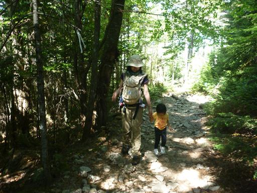
斜面は一面苔に覆われている。
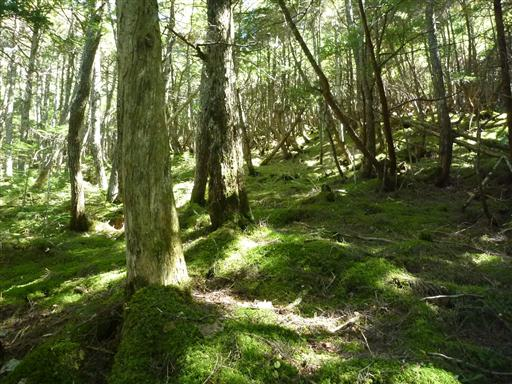
標高を上げると展望が広がってくる。何と遠くに北アルプスが見えている。
穂高岳・槍ヶ岳などがはっきりと見える。
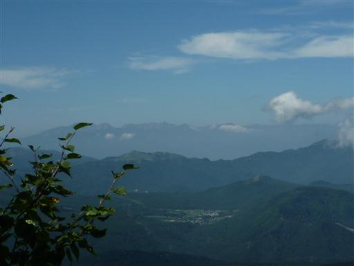
最初は歩きやすい登山道だったが、途中から岩ごろごろの急傾斜登山道になる。
娘はここを登っていくのがなかなか辛いようなので、キャリアに乗せることにする。
周りでは結構小さな子も頑張って登っていたが、年齢を聞くと「5歳」。2歳ではまだ難しいみたいだ。
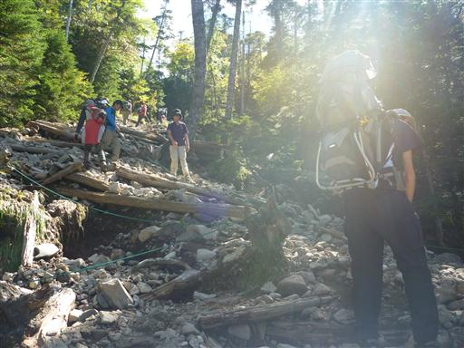
蓼科山荘に到着。ここで前回歩いた時の登山道と合流する。
山荘前は大勢の登山者でにぎわっている。
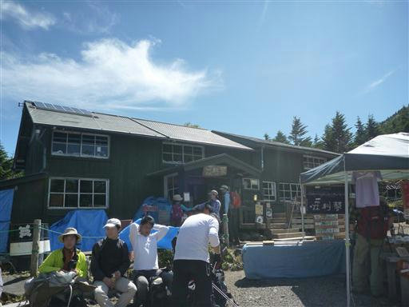
ここからは丸い頭の蓼科山を望むことができる。

ここから先は前にも増して傾斜がきつくなる。大きな岩が転がっていて歩きにくい。
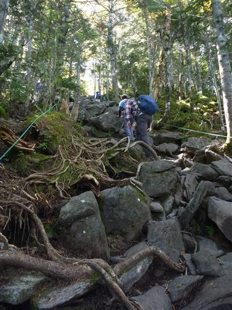
登っていくと樹林帯を抜けて一気に視界が開ける。
八ヶ岳の山々、遠くには浅間山が見えている。

この辺りは若干紅葉が始まっている。
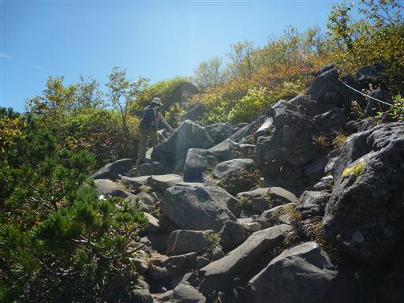
蓼科山頂ヒュッテに到着。
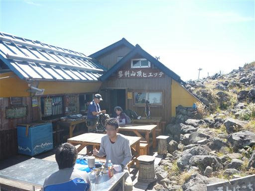
もう山頂は目と鼻の先だ。岩石が転がる道を歩いていく。
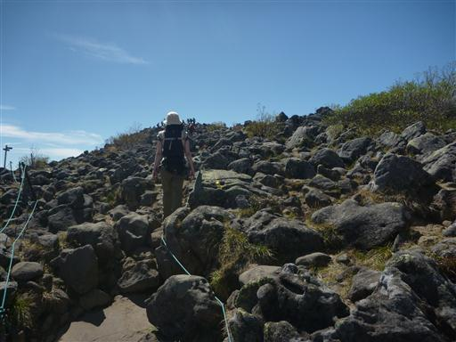
蓼科山山頂に到着。標高2530m。
登山者の数は多いが山頂が広いため、大混雑という感じはしない。
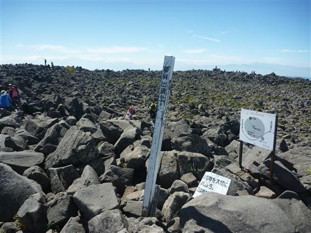
今日は天気がよく四囲の展望が楽しめる。正面に見えるのは優美な裾野を引く八ヶ岳だ。
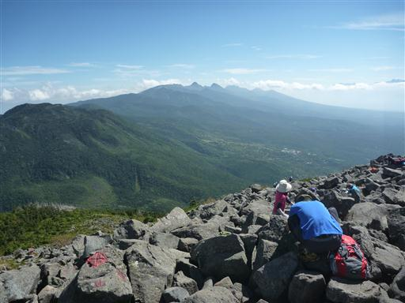
展望を楽しみながら昼食をとったら、噴火口の真中にある社を訪れる。
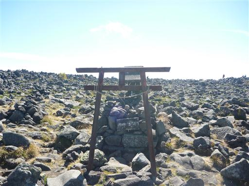
山頂部と反対側に回ってみる。奥に見える少し高い部分が山頂だ。
一面岩石が広がる巨大な噴火口だ。
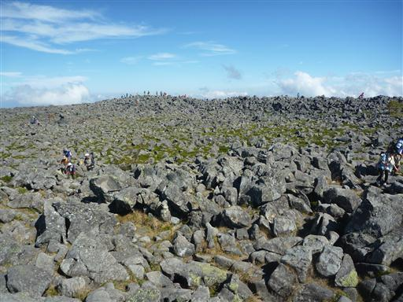
ここからの展望も素晴らしい。
左手前に霧ヶ峰、右に美ヶ原、中央は鉢伏山だ。
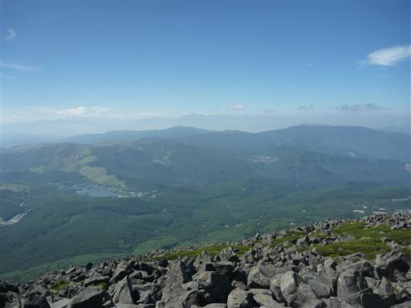
展望を満喫したら、火口をぐるっと半周することにする。
はっきりと道ができているわけではないので歩きにくい。
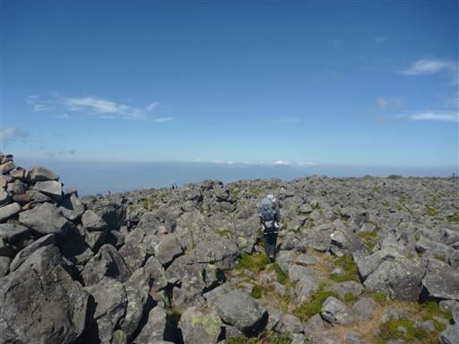
蓼科山頂ヒュッテまで戻ってきたら下山開始。
転がり落ちそうなほどの急な坂だが、足場がたくさんあるため案外歩きやすい。
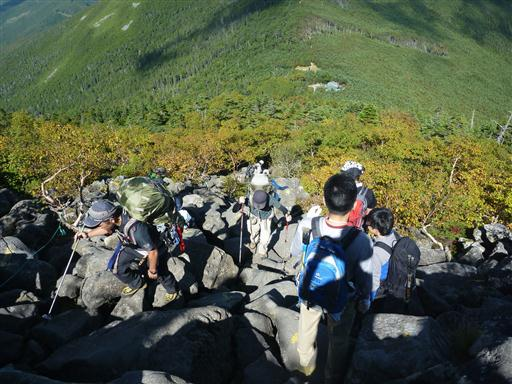
下山。軽い山とはいえ久しぶりの本格的な登山のため、足がかなり疲れてしまった。
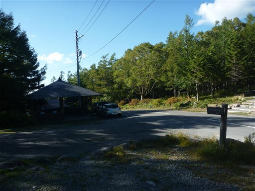
本日の宿、ウォールデンに移動。夫婦で宿とレストランを経営しているようだ。
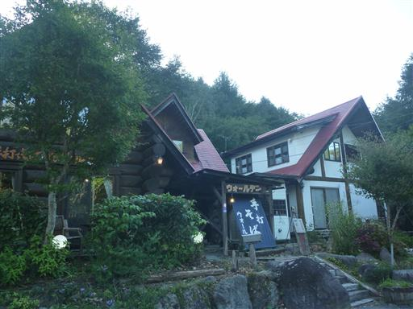
室内はこじんまりしている。
トイレ、風呂が共同なのが難だが、料金の割に部屋はきれいで
宿の人も親切だったので、気持ちよく1泊することができた。
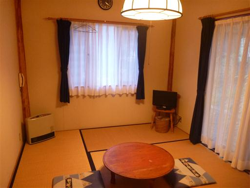